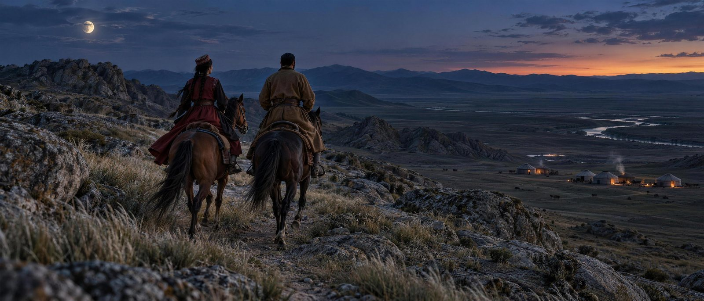
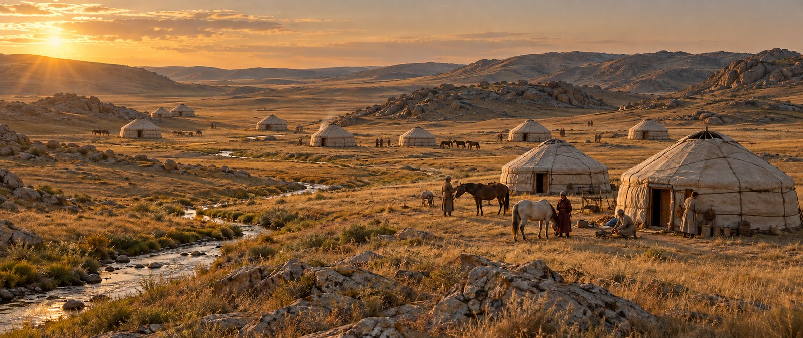
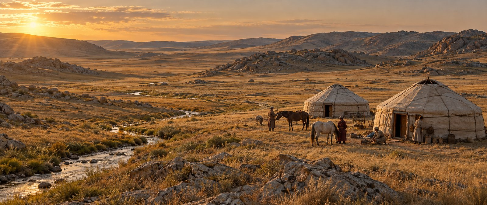
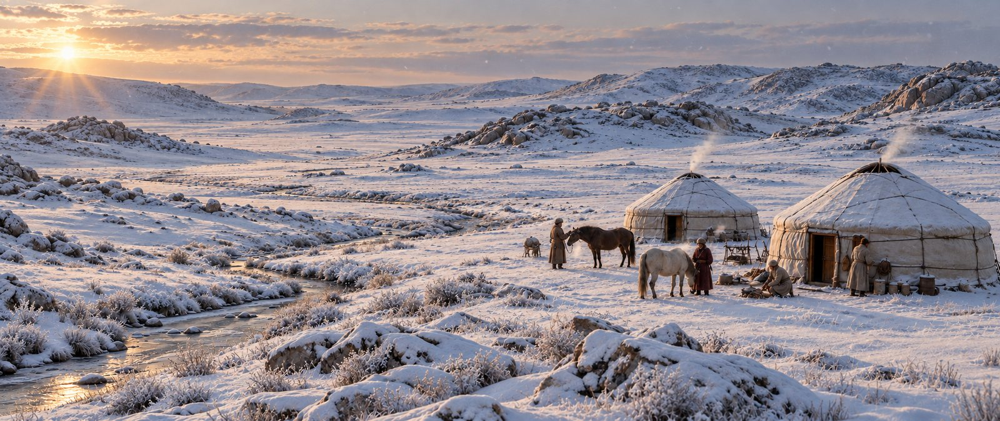
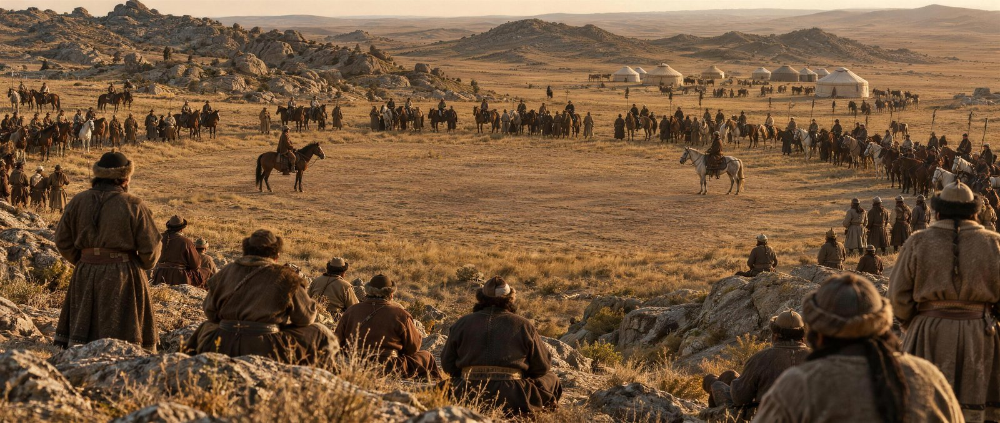
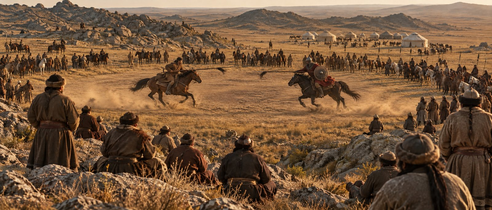
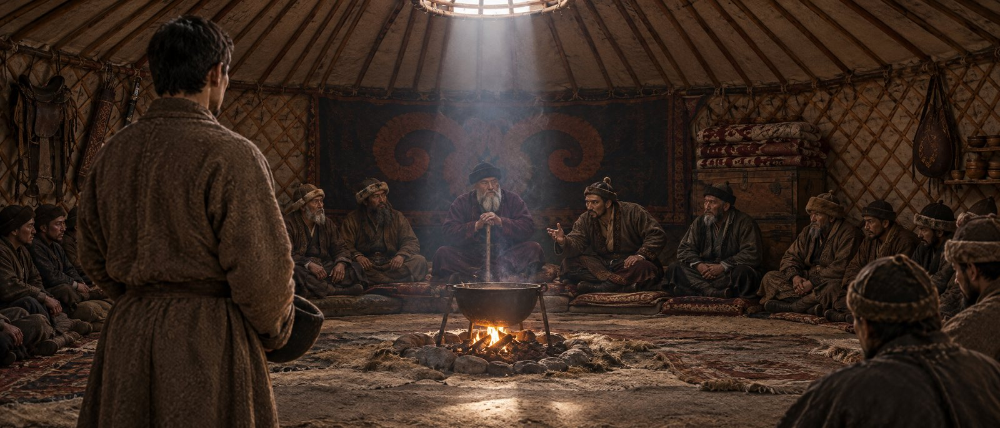
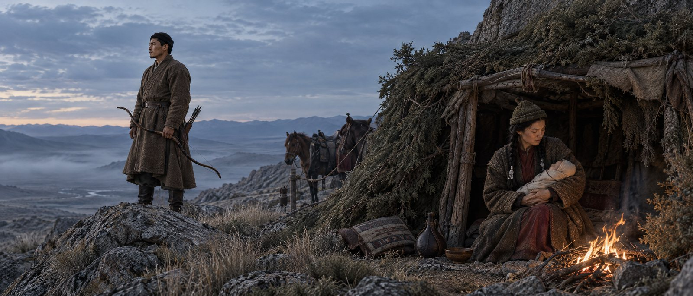
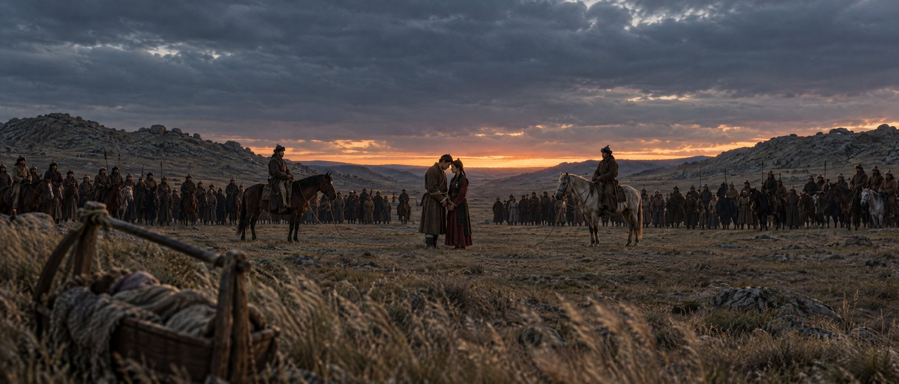
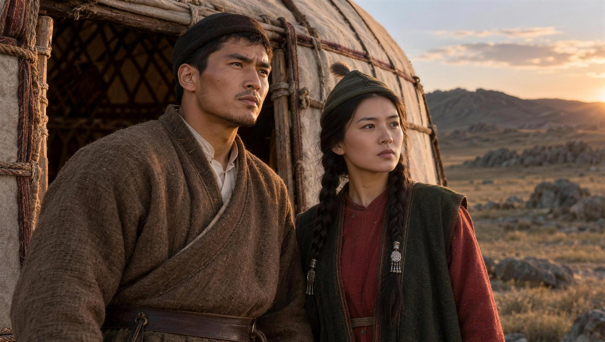

К встрече с режиссёром и продюсерами · 13 октября 2026
Сохранить масштаб картины. Проверить экономию на кадрах.
01 · Достройка среды
Одна композиция: настоящие юрты, актёры и предметы в переднем плане, развитие окружения в глубине. Потяните границу: слева снято две юрты, справа тот же кадр с достроенным аулом.


Снято: две юртыДостроено: аулНастоящие юрты, актёры, лошади и реквизит для переднего плана.
Дальние юрты и табуны. Концепты, затем подготовка фона и совмещение со съёмкой.
Дополнительные декорации и перевозку со стоимостью фона, трекинга и доводки.
Обе картинки сгенерированы. Это демонстрация идеи достройки, а не обработанный съёмочный исходник.
02 · Сезон и атмосфера
Тот же ракурс и расположение юрт. Меняются снег, растительность, свет и атмосфера. Зимний блок виден до того, как выпал снег.

ЛетоЗимаПроверить сезонную смену общего плана без повторного ожидания нужной погоды.
Зимние детали переднего плана: костюмы, дыхание, следы и контакт со снегом.
Стабильность снега, теней и геометрии при движении камеры. Полную стоимость правок.
Мелкие детали в концептах могут отличаться. Для фильма сохранение кадра проверяется на видео.
03 · Массовка и табуны
Собрание перед конфликтом и следующий момент той же сцены: поединок на той же пластине, с той же камеры. Снять героев и ближайших участников, дополнить дальние группы и окружение.


Количество людей на горизонте, движение лошадей, тени и отсутствие повторяющихся фигур проверяются в коротком видеотесте. Управляемая цифровая анимация и ручная доводка входят в смету.
04 · Подготовка сцены
Концепты для обсуждения света, рельефа, пространства и направления движения. До съёмки: согласовать ракурс и собрать черновую сцену для выбора монтажа.



Красивый статичный кадр ещё не подтверждает качество сцены в движении. При оценке учитывать свет на актёрах, работу с лошадьми и съёмку переднего плана.
05 · Герои и исторические ориентиры
Вымышленные лица и предложение палитры. Сходство с историческими людьми не установлено.

Широкие плечи, смуглый типаж, грубая шерсть. Термин «шекпен» точнее для выбранной шерстяной верхней одежды.
Матовые ткани, сдержанный декор, две косы. Красный и зелёный — выбранные цвета, а не доказанные цвета одежды героини.
Музейные предметы XIX века дают ориентиры. Точный костюм 1780 года требует проверки художником и историком.
У Шәкәріма укрытие после побега — шалаш с арчой. Пещера на странице мира фильма — решение адаптации; здесь показаны оба варианта.
06 · Следующий шаг
Шоты по 4–6 секунд, исходная съёмка и итог рядом, учёт времени и правок. Превиз оценивается как подготовка, остальное — на согласованном качестве изображения.
Статичный план с достройкой; тот же аул с медленным движением камеры.
Расширение дальней массовки; превращение летнего общего плана в зимний.
Черновая сцена побега или суда: ракурсы и ритм монтажа. Оценивать как подготовку.
Сравнение на одинаковых условиях
Потенциальная экономия = обычное исполнение − полная стоимость гибридного исполнения
Одинаковые длительность, разрешение, движение камеры, сроки, требования к исторической достоверности и число правок. В гибридную смету входят тест, художник, генерации, трекинг, анимация, совмещение, историческая проверка, доводка и резерв. Проценты экономии без этих данных не обещаются.
Критерий решения
Режиссёр принимает изображение в движении, а продюсер видит подтверждённую разницу полной стоимости выбранных кадров. Процент экономии всего фильма обсуждается после сценария и сметы.
07 · Проверка и источники
Три уточнения сделают исторические заявления точнее. Все кадры здесь — художественная реконструкция; лица вымышленные; для каждой крупной детали нужен датированный ориентир.
История и предметы
Шәкәрім: Еңлік-Кебек, 1912 Российский этнографический музей: мужской костюм Государственный музейный каталог: шолпы, XIX век Актюбинский музей: исследования оружия, с. 52–59 UNESCO: традиция изготовления юртПроизводство и проект
Autodesk: кейс AI Training Autodesk: от идеи к финальному кадру Мир фильма «Еңлік-Кебек»: герои, сцены, раскадровкаКейс Autodesk показывает ИИ-подготовку сцены с последующей ручной доводкой. Результат чужого проекта нельзя переносить в смету этой картины.